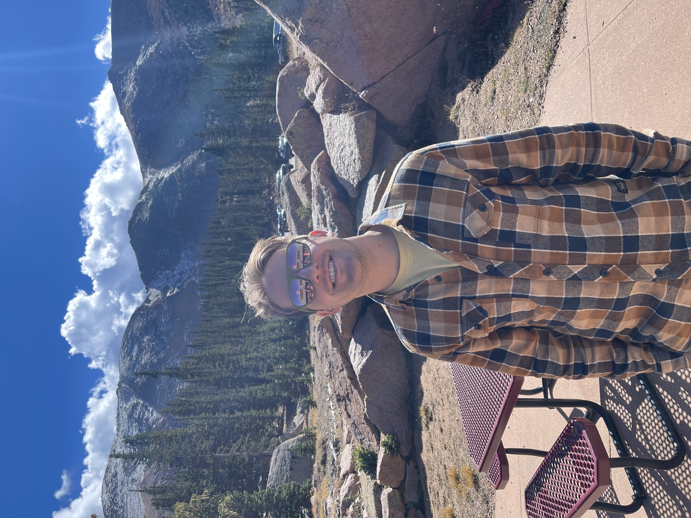
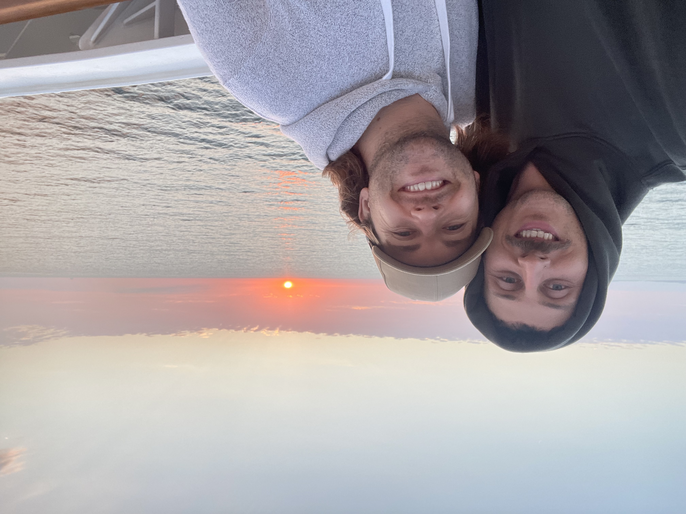
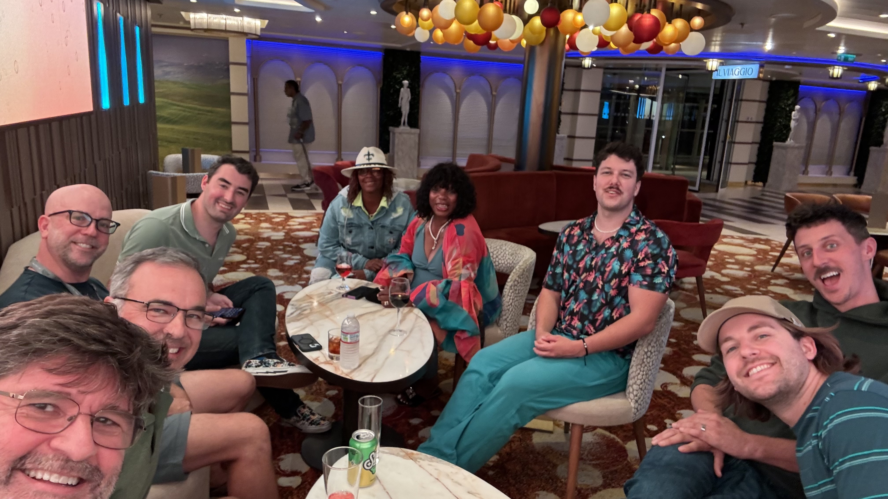
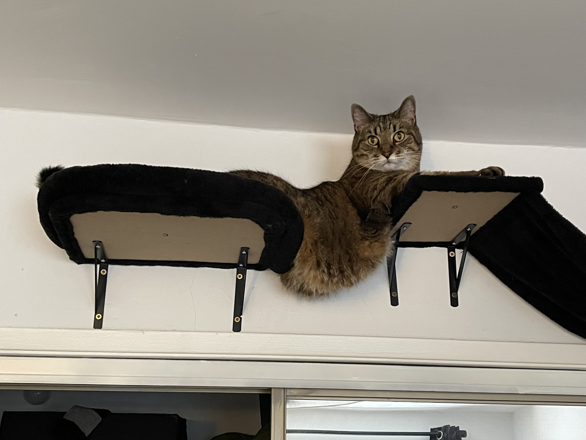
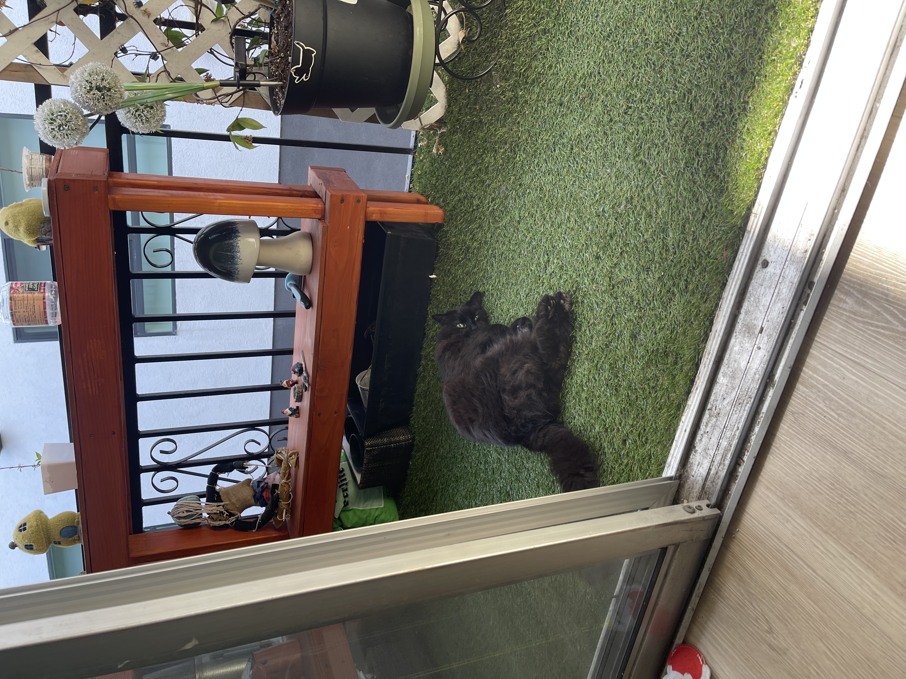

I love computers, but I have a lot of other interests as well.
Some of my interests include...
I love to get out into nature and push myself to go on challenging hikes. Here is a picture of me in Colorado after hiking Pike's Peak:
I am a pisces, which means I love the ocean. Recently, I've developed a love for going on cruises. I like to go with my husband, Colin - and we've met a lot of great friends along the way!
 I'm not sure if cats count as a hobby - but mine are a huge part of my life!
Armani is my 13 year old sassy tabby cat. We built him a palace in the sky, and he loves to lay on it.
Salem is my 17 year old black cat (named after Sabrina the Teenage Witch). He loves having time to relax on our balcony.